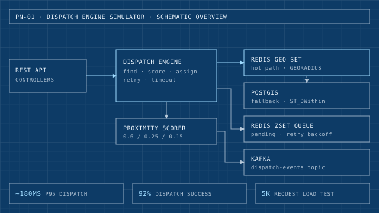

Backend systems
Dispatch Engine Simulator
Real-time dispatch for delivery-style matching: Redis GEO lookups with a PostGIS fallback, scored assignment, state-machine retries and Kafka events.
- 5K-request bursty load test: about 180ms p95 dispatch latency and 92% dispatch success.
- Shipped as freelance work for a food catering business: 300 orders/day and 90% fewer delivery-status inquiries.
- Java
- Spring Boot
- PostgreSQL
- Redis